|
|
| hard corals text index | photo index |
| Phylum Cnidaria > Class Anthozoa > Subclass Zoantharia/Hexacorallia > Order Scleractinia > Family Fungiidae > Genus Fungia |
| Oval
mushroom coral Fungia sp.* Family Fungiidae updated Nov 2019 Where seen? This mushroom coral with is sometimes seen on some of our undisturbed Southern shores. The coral is free-living (it is not attached to the surface) and large ones may be seen on shallow sandy or rubbly areas near living reefs. Usually seen alone. Features: Oval to elongated convex disks with rounded ends, to about 15-25cm long. Prominent central furrow. Some species may have only one mouth, while the other species may have several, found both in and outside the central furrow. Upper surface with thin lines radiating from the centre, with fine 'teeth' which are usually not obvious when the lines are covered with fleshy tissue. Lines parallel, mostly continuous. Tentacles are tiny and very sparse. Tentacles may be extended both during the day and at night. The underside usually concave. Colours seen usually beige or pinkish brown or yellowish brown. Sometimes confused with other long mushroom corals. Here's more on how to tell apart elongated mushroom hard corals. |
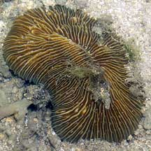 Prominent central furrow. Sisters Island, Feb 06 |
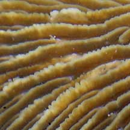 Tiny teeth. |
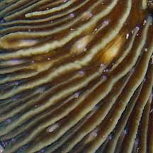 Lines appear smooth when covered with the tissue. Pink tips tentacles. |
|
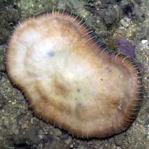 Undeside |
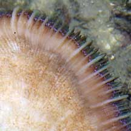 |
Lines appear smooth when covered with the tissue. Pink tips tentacles. |
|
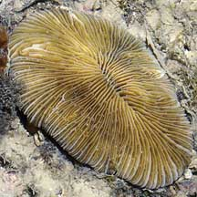 Pulau Hantu, Apr 06 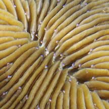 |
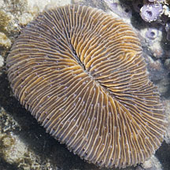 Terumbu Bemban, Jul 11 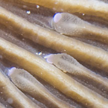 |
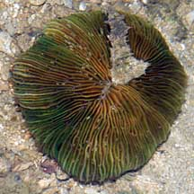 Pulau Hantu, Jul 08 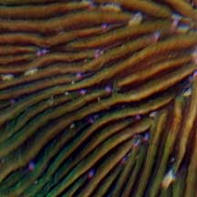 |
*Species are difficult to positively identify without close examination.
On this website, they are grouped by external features for convenience of display.
| Oval mushroom corals on Singapore shores |
On wildsingapore
flickr
|
| Other sightings on Singapore shores |